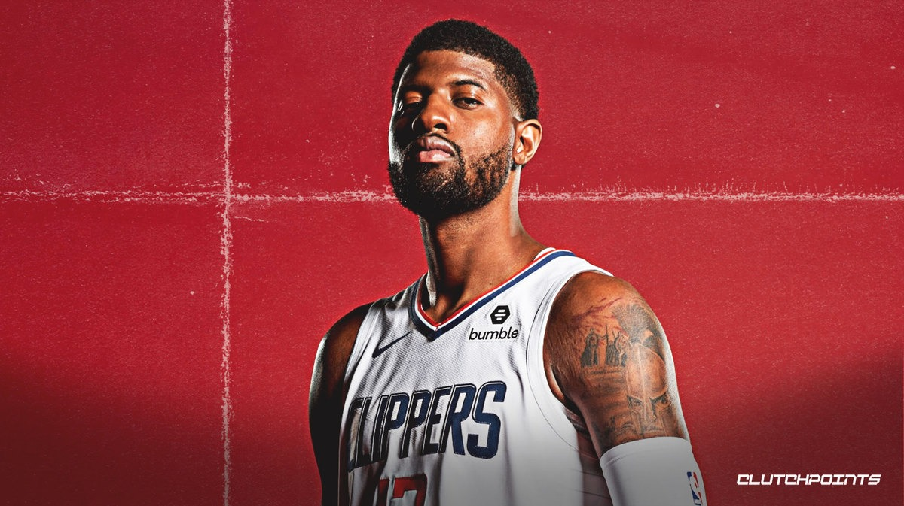

Paul Clifton Anthony George (born May 2, 1990) is an American professional basketball player for the Los Angeles Clippers of the National Basketball Association (NBA). He is a six-time NBA All-Star and five-time All-NBA Team selection, as well as a four-time member of the NBA All-Defensive Team.
George played high school basketball for Knight High School before playing two seasons of college basketball at Fresno State. He was selected by the Indiana Pacers with the 10th overall pick of the 2010 NBA draft, and earned NBA All-Rookie Second Team honors. He was named the NBA Most Improved Player in 2013, when he also earned his first All-Star selection. George suffered a broken leg in 2014 while competing for a roster spot on the United States national team for the FIBA Basketball World Cup. He missed most of the 2014–15 season, but recovered to become an All-Star again in 2016, when he also won an Olympic gold medal. He was traded to the Oklahoma City Thunder in 2017, and played two seasons for the Thunder before he was traded to the Clippers in 2019.